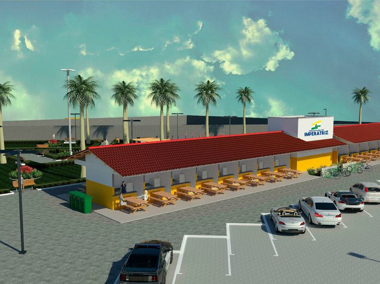

fonte: Prefeitura de Imperatriz
O Panelódromo
O Panelódromo de Imperatriz funciona 24 horas por dia, além dos 42 boxes, 5 metros quadrados cada, o empreendimento conta com iluminação pública, estacionamento, conjunto de banheiros sanitários, instalações sanitárias, abastecimento de água potável, praça de convivência ao ar livre e um coreto para apresentações de artistas locais.
Cardápio
Sua Opnião é muito importante
-
Sueile Lima
"Está muito bom agora, lugar arejado, sem aglomerações, limpo. Muito agradável o atendimento e o ambiente também."
-
Iudeneide Sousa
"Espaço amplo com estacionamento com vários tipo de comidas regianal. Com Internet grátis. E 24horas"
-
Wellington Araújo Silva
"Lugar limpo e bem arejado!"
-
Júlio Fidelix
"Local limpo, organizado e aberto 24 horas!"
-
Andreia Camelo
"O point de Imperatriz nos finais de festas....muita variedade e o principal prato A panelada..."